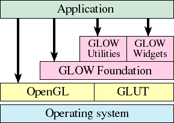

|
Contents |
Road Map |
| Why do we need GLOW? |
OpenGL1 is an industry-standard, high-performance 3D graphics library. Originally developed by SGI, OpenGL is now controlled by a small consortium of corporations and has now become the most widely-used and well-known 3D API. Implementations are available on most major platforms, and it is being used in a wide range of applications from scientific visualization to CAD to games.
The OpenGL API is designed to be platform-neutral. Using a set of abstractions, it operates independent from the underlying window system, meaning the same OpenGL code can be used in applications written for any OpenGL-supporting platform, including different implementations of Unix, Mac OS and Windows. However, to write a complete application, an auxiliary API is generally needed to "hook" the OpenGL abstractions into the native window system. This auxiliary code is platform-dependent, and sometimes requires dealing with the nitty gritty of the operating system API.
To simplify development of interactive programs using OpenGL, a number of cross-platform user interface toolkits have been developed. These toolkits hide the details of the underlying operating system behind simple platform-independent APIs, and typically provide a set of common functionality for interactive applications. Probably the most well-known of these toolkits is GLUT, which is now often bundled with OpenGL development kits. Developed by Mark Kilgard, GLUT was designed to simplify creation of simple OpenGL applications on an X-windows based system such as SGI's IRIX operating system. However, it has also been ported to numerous other platforms, and is now a de facto standard, being, for example, the basis for the sample code in the official OpenGL Programming Guide (the so-called "Red Book").
So what's wrong with GLUT?
Nothing, if you're writing very simple programs that require only a minimal amount of user interaction. However, for more complex programs that use a large number of user interface elements and require complex interaction with the user, GLUT begins to demonstrate several key weaknesses:
- Its API is callback based and non-object-oriented. Writing a large program involves keeping track of many IDs and callbacks, which can be complex and error prone.
- Its facilities for user interaction are very primitive. In particular, GLUT does not provide access to widgets such as pushbuttons, pulldown menus and scroll bars.
How does GLOW help?
GLOW is designed to address those issues. It first provides a C++ wrapper API around GLUT, eliminating the callback and ID system and replacing it with an object-oriented API in which events are delivered directly to each C++ object. The new API is similar in spirit to existing object-oriented user interface frameworks, so if you understand how to use any GUI framework, you should be able to come up to speed on GLOW fairly quickly.
Second, it provides an extensive widget library, including push buttons, check boxes, radio buttons, scroll bars, sliders, text fields, menus, and more. GLOW actually does not use the native widgets provided by the underlying operating system, but instead implements its own cross-platform widgets using OpenGL for rendering and the GLOW API for event handling. Because of this, GLOW widgets look and behave the same, regardless of which platform you are running. GLOW widgets are also heavily customizable and extensible, even allowing you to write your own widgets and integrate them seamlessly into the system.
Finally, GLOW extends GLUT by providing a set of additional features that are often useful in interactive applications. One such feature is a component hierarchy, similar to a scene graph API. This simplifies rendering and user interaction by allowing you to create and reuse rendering modules, called "components." For example, the GLOW distribution includes a component that allows the user to manipulate a 3D scene using the arcball algorithm developed by Ken Shoemake. You can allow the user to manipulate any scene just by inserting a manipulator component. GLOW also simplifies handling of common data types such as colors and fonts.
What about MUI?
The Micro User Interface (MUI) is another GLUT-based widget library that has made its way into recent distributions of GLUT. MUI is small and elegant, but poorly documented and not as feature-rich as GLOW. There are a number of widgets provided by GLOW that are not available using MUI, and MUI does not attempt to provide a unified object-oriented API to replace GLUT's callback-based interface. It is just an add-on to GLUT that provides some rudimentary widget capability.
What about GLUI?
The GLUI User Interface Library is yet another GLUT-based widget library that has recently become popular. Developed by Paul Rademacher, GLUI is much more sophisticated and better documented than MUI, and it provides a large number of predefined widgets. However, while its rich feature set and easy-to-use API have gained it some popularity, GLUI still suffers from some of the same shortcomings as MUI. Namely, the API is not extensible-- you cannot define your own widgets or customize the existing ones very heavily-- and GLUI, like MUI, is still an add-on to GLUT that does not provide an object-oriented framework for writing more complex programs.
What about wxWindows?
There are a large number of cross-platform frameworks out there that use the native widget system. One fairly popular example is wxWindows. Many of these are highly polished and very feature rich, and some have facilities for integrating with OpenGL. However, using the native widget system often limits the flexibility of these frameworks, and slows their development on some platforms. (The Mac OS, for example, is often left out or kept in perpetual beta.) In addition, the use of native widgets means that their appearance and behavior may be different on different platforms. In contrast, GLOW and GLUI are almost completely independent of the native operating system. The same code is used for every platform, and the only platform-dependent code is hidden in the lightweight and ubiquitous GLUT library.
| What exactly is GLOW? |
Figure 1: Architecture of GLOW  GLOW is an application framework. That means it contains the code necessary for implementing almost an entire program. You must fill in the details of exactly what you want the program to do; you do this primarily by writing subclasses.
Figure 1 illustrates the architecture of a GLOW-based program. An application typically uses OpenGL directly to do its own drawing, and interfaces with GLOW to handle user interface issues. Most applications will not need to directly access the underlying GLUT interfaces at all.
GLOW itself has two fairly well-defined layers. The foundation layer incorporates all the fundamental user interface tools, including windows, menus, drawing and event handling. The widget set and utility components such as the 3D view manipulator comprise a second layer of tools that are implemented using the GLOW foundation layer. You may build an application using only the foundation layer, but the second layer is very useful for creating more complex user interfaces.
GLOW is a source code library. It is distributed as a set of C++ source and header files that you may incorporate into your own projects. You may incorporate the source directly into your project, or you may build a library archive or shared library from the GLOW distribution.
What's up with the name "GLOW?"
GLOW's full name is "The GLOW Toolkit". Some have speculated that the name stands for "OpenGL Object-oriented Windowing toolkit," but that isn't (officially) true, since I don't have a license to officially use the name "OpenGL." The name is simply "The GLOW Toolkit" or "GLOW" for short. It isn't an acronym for anything. Officially.
| About the author |
Hi! My name is Daniel Azuma; I'm currently a graduate student at the University of Washington, studying computer science. My research is in graphics, with emphases on multiresolution geometric modeling and image-based rendering. I'm also a hobbyist Mac developer and a Java developer. In fact, nowdays it seems I develop for almost every platform except for Windoze...
I began working on GLOW in my spare time in early 1997. At that time, I was an undergraduate student at the California Institute of Technology (or Caltech2). Along with another student, Bradley Nelson, I worked on a small research project involving writing an interactive tool using OpenGL. Some of the original conceptual work was actually done by Bradley. He wrote a very basic object-oriented wrapper around GLUT, which he called "gloo," on which the early versions of our tools were based. Later, when I took over the entire project, I proceeded to rewrite gloo the way it "should have been done in the first place." The result was the first workable version of GLOW. Since then, I've written a large number of OpenGL-based programs both for my research and for personal edification, and during that time, I polished the API and the widget library. The current version of GLOW is the result of three years of continual revision and improvement, driven by my needs as a developer. I'm releasing it now in the hopes that it might be useful to the OpenGL developer community in general.
When I'm not in front of the computer (and nowdays I try to stay away from the horrid things as much as I can), you may find me hanging out and helping lead a Bible study in the nearby dorms, at a piano improvising on a Debussy prelude, or romping around Seattle looking for good Asian food. And while OpenGL programs look great with GLOW, I believe our lives look even better if we're GLOWing with the love of Jesus Christ. He's always the most important guy.
1 OpenGL(tm) is a trademark of SGI.
2 "Caltech" is spelled as one word, with a lower-case "t". We Caltech survivors... er... graduates are very sensitive about the proper spelling of our alma mater's name, so don't provoke us if you want to get tech support.
|
Contents |
Road Map |
The GLOW Toolkit